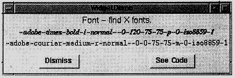
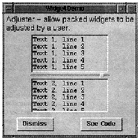
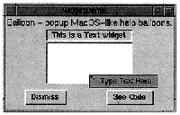
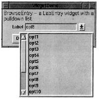
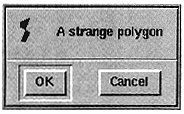
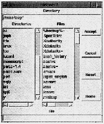
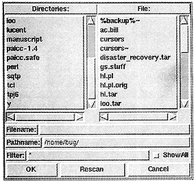
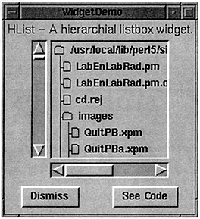
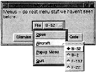
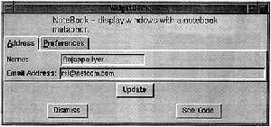

To keep matters simple, this widget tour conforms to the Perl/Tk widget demonstration standard. widget is a program (bundled in the Perl/Tk distribution) that highlights all the standard Tk widgets and many features of the Tk toolkit. You can extend widget's demonstrations with your own if you follow a few simple rules.
To run these demonstrations all you need to do is save the sample scripts in an empty directory, ensuring that they all end with a .pl suffix. Then simply change to that directory and execute the widget program with a single argument: the directory name containing the demonstrations. (If you're lazy, you can just set the environment variable WIDTRIB to that directory and run widget without a command line parameter.)

Our first stop on the tour is Font, which isn't really a widget at all. Rather, it's a Tk method you invoke to help configure real widgets. You supply Font with an approximate font specification, and it queries the X server and returns the name of the closest font available on your system.
In X, a fully qualified font name consists of 14 attributes, of which these are most important:
family: e.g. Times, Helvetica, or Courier
weight: e.g. bold or normal
slant: i, r, o (italic, roman, oblique)
size: measured in pixels or points
Different X servers have different fonts available, so don't specify attributes that aren't strictly necessary. (Actually, the only guaranteed font name is "fixed".) Here's a program that identifies which fonts are on your system.
# Font - find X fonts.
use Tk::Font;
use vars qw/$top/;
sub Font {
my($demo) = @ARG;
my $demo_widget = $MW->WidgetDemo(
-name => $demo,
-text => 'Font - find X fonts.',
-geometry_manager => 'grid'
);
$top = $demo_widget->top; # get grid master
my $font = $top->Font(qw/foundry adobe family times point
120/);
$top->Label(-text => $font,-font => $font)->grid;
$font=$top->Font('*-courier-medium-r-normal-*-*');
$top->Label(-text => $font, -font =>
$font)->grid;
}
Note that all widget demonstrations have their own use statement to incorporate the widget; to use the Font widget, you need to use Tk::Font. Furthermore, every demonstration is a subroutine that uses the WidgetDemo widget to create its top level window and user interface. The top level window is divided into three regions. The upper region has the demonstration title, the bottom region contains the standard Dismiss and See Code buttons. The middle region is where your demonstration code is placed, and WidgetDemo lets you reference that code with its top() method. All standard widget demonstrations follow this format.
The Font() subroutine shown above creates two labels, each with a different font, which are gridded and displayed. Notice that Font accepts its input either in standard X notation shown in the second $top->Font statement above, or in the more intuitive keyword => value form shown in the first statement.

An Adjuster widget is a tiny handle that you can grab with your mouse and use to interactively resize a packed widget. Here's how to create one:
my(@pack) = qw/-fill both -expand 1/;
my $t1 = $top->Text(qw/-width 20
-height 5/)->packAdjust(@pack);
foreach (1 .. 10) {$t1->insert('end', "Text 1, line $ARG\n")}
my $t2 = $top->Text(qw/-width 20 -height 5/)->pack(@pack);
foreach (1 .. 10) {$t2->insert('end', "Text 2, line $ARG\n")
}
Here two text widgets are packed top to bottom, but the topmost one has an adjuster below it. Dragging the adjuster down with button 1 pressed enlarges the top text widget and shrinks the bottom one. If the adjuster is packed left or right then the widget's width is changed.

A Balloon object provides the framework to create and attach help balloons to various widgets. These balloons pop up when the mouse pauses over the widget for more than a specified amount of time. It's another one of those widgets that isn't really a widget - it's more a classical object with methods that let you define and manipulate other widgets.
Balloon help can appear in a balloon that pops up over a widget, in a status area, or both. The following code makes balloon help appear in both places.
my $s = $top->Label(qw/-width 20 -borderwidth 2 -relief sunken/)->grid; my $t = $top->Text(qw/-width 20 -height 5 -background azure/)->grid; my $balloon = $top->Balloon(-statusbar => $s); $balloon->attach($s, -balloonmsg => 'See Balloon help here', -statusmsg => 'This is a Label widget'); $balloon->attach($t, -balloonmsg => 'Type Text Here', -statusmsg => 'This is a Text widget');
The status bar $s is typically a label, but can be any widget that accepts -text, such as Button, CheckButton, Radiobutton, or Message. The balloon system is initialized with a call to the Balloon() constructor, where the status bar is registered. The attach() method associates widgets with their corresponding help messages. Then, when the cursor pauses over a registered widget for more than 100 milliseconds (this delay can be changed), the status bar message is updated and a help balloon pops up over the widget, like the "Type Text Here" window below.

A BrowseEntry widget is an enhanced version of the LabEntry (labelled entry) widget. It provides a button to pop up a list of all possible values that the Entry might take. BrowseEntry supports all LabEntry options except -textvariable, which is replaced by -variable.
my $var;
my $be = $top->BrowseEntry(-label => "Label",
-variable => \$var)->grid;
foreach my $opt (1 .. 15) {
$be->insert('end', "opt$opt");
}
We see that BrowseEntry has an insert() method that lets you populate it with attributes, just like the ListBox and Text widgets. Indeed, the popup widget looks just like a Listbox, and after making a selection the value is stored in the BrowseEntry variable $var.
The DialogBox widget is a spiffier version of the Dialog widget. It defines two vertical frames, placing all the dialog buttons in the lower frame and letting you pack a single Tk widget in the upper frame.
my $d = $top->DialogBox(qw/-title DialogBox
-buttons/ => [qw/OK Cancel/]);
my $c = $d->add(qw/Canvas -width 160
-height 40/)->grid;
$c->createPolygon(qw/10 10 20 5 10 30 15 30
20 20 10 15 10 10 -fill red/);
$c->createText(qw/100 20
-text/ => 'A strange polygon');
$top->Button(qw/-text DialogBox -command/ =>
sub{ print "You selected button ", $d->Show, ".\n";
})->grid;
The window produced by this code is shown below:

DialogBox has an add() method that populates the top frame, and a Show() method that pops up the dialog and waits for user input. Here the DialogBox contains a Canvas, which itself contains a strange red polygon. The last statement creates a Button that pops up the DialogBox and prints the name of the selected button.
The first argument to add() is a string - not a widget reference - naming the type of widget to place in the top portion of the DialogBox. This means that you can't create your own frame, populate it as you'd like, and use that in the DialogBox. What you do instead is let add() create the empty frame, and fetch a reference to the frame using Subwidget():
my $frame = $d->Subwidget('frame');
Notice that DialogBox advertises the widget as a lowercased name. Once you have the frame's handle you can fill it as usual:
$frame->Message(-text =>
'This DialogBox has a populated frame.')->grid;
$frame->Label(-image => $d->Photo(-file =>
Tk->findINC('demos/images/teapot.ppm')))->grid;
FileDialog and FileSelect are widgets that let you select a file, or possibly a directory, from a dialog window. Although each has an extensive set of options, far too numerous to detail here, both operate in essentially the same way: they present a list of files from which you can choose, and a list of directories for you to navigate (and possibly choose).
my $fselect = $top->FileSelect(-directory => $ENV{HOME});
$top->Button(qw/-text FileSelect -command/ =>
sub {
my $fname = $fselect->Show;
print "You selected $fname.\n" if defined $fname;
print "You canceled.\n" unless defined $fname;
})->grid;
To create a basic FileSelect widget, just pass -directory to the constructor and, as usual, use Show() to pop up the dialog for user interaction. Similarly, create a FileDialog like this:
my $fdialog = $top->FileDialog('Path' => $ENV{HOME});
FileDialog also has a Show() method. Of the two widgets, FileDialog is more customizable. Here's what the FileSelect widget looks like:

Here's what the FileDialog widget looks like:

The most complicated widget we'll look at is HList, the hierarchical list widget. It's used to display any data with a hierarchical structure, like a family tree or Unix file system. Since I don't have my family's genealogy handy, let's display a simple Unix directory tree.
Each HList list element is uniquely identified by a string called the entry path, consisting of one or more names delimited by a separator character (like the / in a Unix pathname). List entries are normally connected by lines, but you can disable them. List entries can be annotated with simple text, a text/image combination, or a Perl/Tk widget.
my $h = $top->Scrolled(qw\HList -separator /
-itemtype imagetext\)->grid; $h->{file_image} =
$top->Bitmap(-file =>
Tk->findINC('file.xbm'));
$h->{fold_image} = $top->Bitmap(-file =>
Tk->findINC('folder.xbm'));
$h->configure(-command => sub {
print "Selected $ARG[0], size=",
$h->info('data', $ARG[0]), ".\n";
});
my $text = Tk->findINC('demos');
chdir $text;
show_dir '.', $text, $h;
The demonstration starts by creating a scrolled HList instance with / as the entry path separator - convenient since the Unix pathname can then double as the HList entry path. Each list entry is adorned with a file or directory name and a file-to-folder bitmap - that's what -itemtype does. (Other legal -itemtype values are text and window.) The bitmaps are needed at various places in the code, so to avoid declaring them as global variables they're stored as instance variables in the HList widget. (There's a danger here of a hash key clash here [see page 8, top right. -ed.], but in a later issue of TPJ we'll see a relatively safe way to store private instance data.) In the configure() method, the -command callback is bound to double-button-1 and is invoked with a list entry's entry path as the first argument. More on that later.
Displaying the file hierarchy is a simple exercise in recursion.
sub show_dir {
my($entry_path, $text, $h) = @ARG;
opendir H, $entry_path;
my(@dirent) = grep ! /^\.\.?$/, sort(readdir H);
closedir H;
my($file_img, $fold_img) = ($h->{file_image},
$h->{fold_image});
$h->add($entry_path, -text => $text,
-image => $fold_img, -data => 'DIR');
while ($ARG = shift @dirent) {
my $file = "$entry_path/$ARG";
if (-d $file) {
show_dir $file, $ARG, $h;
} else {
my $size = -s $file;
$h->add($file, -text => $ARG,
-image => $file_img, -data => $size);
}
}
} # end show_dir
show_dir() initializes @dirent with the contents of the current directory and adds the current folder to the HList hierarchy. Note that add() expects an entry path, and since -itemtype is "imagetext", it expects values for both -text and -image options. The -data option associates a string with a list entry, in this case 'DIR'.
The while loop simply iterates through @dirent, recursively calling show_dir() on directories. New files are added to the hierarchy, and their sizes are stored in the -data strings.
Now the callback shown earlier should make sense. A double click invokes info() to retrieve and print an item's -data attribute - either a file size or, for directories, the word 'DIR'.

The following demonstration illustrates pulldown, popup and option menus. But there's something new here - menus created via a supported data structure, something I've been hinting at since TPJ #1! All the magic lies in the -menuitem construct. Here's how it works
Pulldown menus. An application's menu bar is typically a frame laid out across the top of the primary window, with one or more menu buttons that, when selected, display a window of menu items such as buttons and cascades. The -menuitems structure lets you tailor the appearance of a menu button's window by describing individual menu items in a concise manner.
-menuitems is a list of lists, but don't let that scare you; the outer list is just there so that -menuitems can be passed as a scalar. It's the inner lists that you care about.
my $menubar = $top->Frame(qw/-bd 5 -relief ridge
-bg orange/)->grid;
my $aircraft = 'B-52';
my $file = $menubar->Menubutton(qw/-text File
-relief raised -menuitems/ =>
[
[Button => '~Open', -command => [\&puts, 'Open']],
[Separator => ''],
[qw/Cascade ~Aircraft -menuitems/ =>
[
[qw/Radiobutton B-52 -variable/ => \$aircraft],
[qw/Radiobutton B-2 -variable/ => \$aircraft],
[qw/Radiobutton F-117 -variable/ => \$aircraft],
[qw/Radiobutton F-22 -variable/ => \$aircraft],
]
],
[Separator => ''],
[Button => '~Popup Menu'],
[Separator => ''],
[Button => '~Quit', -command =>[\&puts,
'Quit'] ],
]
);
$file->grid(qw/-row 0 -column 0/);
After gridding the demonstration's menu bar, a single (long!) statement creates a cascade, three buttons, and three separator menu items. ( To learn more about menus and friends, see TPJ #2.) For each inner list, the first element specifies the type of menu item and the second specifies its text label. The tilde character is a shortcut for -underline and precedes the character to be underlined. Remaining values are standard widget options. Of special note is the Aircraft cascade - it uses the -menuitems structure too.

Popup menus. Notice that the File menu button has a menu item labelled "Popup Menu". Amazingly enough, pressing it makes popup menu appear.
my $p = $menubar->Menu(qw/-tearoff 0 -menuitems/ =>
[
[qw/Button Hi -command/ => [\&puts, 'Hi']],
[qw/Checkbutton frog -onvalue 1 -offvalue 0/],
]
);
$file->entryconfigure('Popup Menu',
-command => [$p => 'Popup']);
Here we create the popup menu and again use -menuitems to populate the menu's window. The File menu item labelled "Popup Menu" is then configured to send a Popup() message to the menu $p on a button release event.
Option menus. The Optionmenu isn't a true menu. It's more similar to a BrowseEntry. An Optionmenu presents a list of values; choosing one changes the Optionmenu text and optionally sets a global variable and/or invokes a callback.
my $o = $menubar->Optionmenu(-textvariable => \$aircraft,
-options => [qw/B-52 B-2 F-117 F-22/],
-command => sub {print "$aircraft!\n"},
-relief => 'raised');
A NoteBook widget displays several pages in a limited space. NoteBook pages are stacked so that only the top page is visible. To raise a page to the top of the stack, the user clicks on its tab.

The NoteBook widget derives from the Frame widget, so it possesses all of Frame's attributes. It extends Frame by adding a visual notebook tab and methods to manipulate text and images on the tab.
my $name = "Rajappa Iyer";
my $email = "rsi\@somewhere.com";
my $os = "Linux";
# Create the NoteBook and add 2 pages, which are really
# Frames with tabs. Given that, we create LabEntry
# widgets and pack them as usual.
my $n = $top->NoteBook(qw/-ipadx 6 -ipady 6/)->pack;
my $address = $n->add(qw/address -label Address
-underline 0/);
my $pref = $n->add(qw/pref -label Preferences
-underline 0/);
$address->LabEntry(
-label => "Name: ", -width => 20,
-labelPack => [qw/-side left -anchor w/],
-textvariable => \$name
)->pack(qw/-anchor nw/);
$address->LabEntry(
-label => "Email Address:",
-width => 50,
-labelPack => [qw/-side left -anchor w/],
-textvariable => \$email
)->pack(qw/-anchor nw/);
$pref->LabEntry(-label => "Operating System:",
width => 15,
-labelPack => [qw/-side left/],
-textvariable => \$os
)->pack(qw/-anchor nw/);
$top->Button(qw/-text Update -command/ =>
sub {
print "name = $name, email = $email, os = $os\n";
}
)->pack;
This demonstration is taken directly from the Perl/Tk distribution and starts by generating a NoteBook widget with two pages: $address and $pref. The Address page was created first, which is why it's on top of Preferences. Since the pages are derived Frame widgets, you can pack them however you'd like. I've packed them with some labelled entry widgets just to keep things simple.
The TPJ programs web page provides several widget demonstrations I haven't talked about: Axis, Dial, Pod and WaitBox. Axis is a derived canvas widget with X and Y axes so you can plot simple 2D data. Dial is a scale widget disguised as a speedometer. Pod lets you render embedded pod text and display it in a window. (I saw this done in ptkmines, a Minesweeper game you'll find at http://hadron4.phys.rpi.edu/~smithj4/software/ptkmines, and thought it was pretty cool.) WaitBox is a modal dialog widget with an optional progress bar.
Finally, I'd like to mention two other derived widgets that can make your GUI development easier: ROText and TextUndo. Both are text widgets; ROText lets you display read-only text, eliminating all bindings that would let users alter the text. TextUndo, on the other hand, lets the user edit the text with an unlimited undo capability.
_ _END_ _